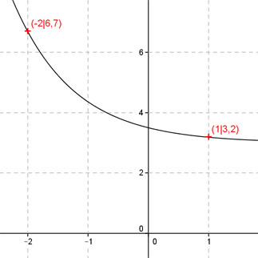

Aufgabe 118 Ergänzen Sie die Wertetabelle für den Graphen: y = 0,5e-x + 3 x -2 1 y 6,7 3,2 0,5 y = f(1) = 0,5 * e-1 + 3 = ----- + 3 = 3,2 gerundet e f(x) = 6,7 eingesetzt : 6,7 = 0,5 * e-x + 3 | -3 3,7 = 0,5 * e-x | :0,5 7,4 = e-x Logarithmiert: ln 7,4 = -x * ln e ln 7,4 = -x |:(-1) x = -ln 7,4 = -2 gerundet 